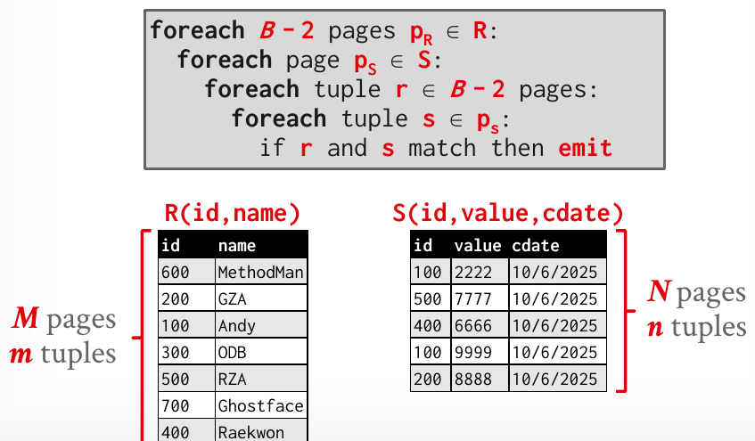
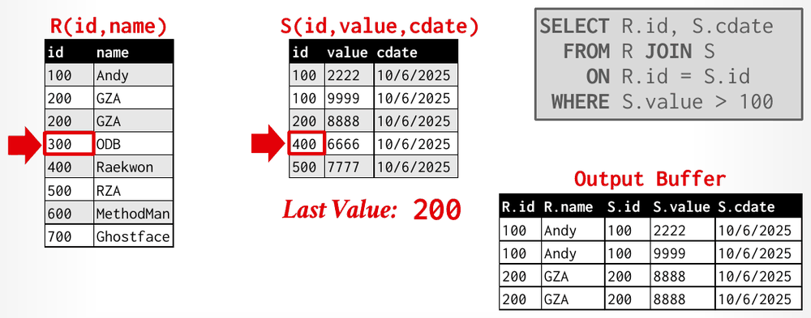

Database Internals in Go · Unit 5 · Lesson 3
Joins I: Nested Loop and Sort-Merge Joins
Compute the I/O cost of naïve, block and index nested loop joins and of a sort-merge join, choose the outer table, and trace a sort-merge join that has to backtrack over duplicate keys.
Normalized tables split information across relations, and joins put it back together. Slide 13 calls the join the most common operation, so it has to be optimized carefully. Lecture #12 compares join algorithms by one number, the page I/Os they need, and the differences are enormous: the same join can cost fifty million I/Os or six thousand. This lesson covers the nested loop family and the sort-merge join, which reuses the external merge sort from Lesson 1. Lesson 4 covers hash joins. Project 3 builds the nested loop and index nested loop joins.
Unit 5, Lesson 1: the general external merge sort has B = 50 buffer pages and a 2,000-page file. How many passes does it take, and how many I/Os?
Unit 0, Lesson 1: R has 100,000 tuples and S has 40,000 tuples. How many tuples are in the product R × S?
Unit 3, Lesson 3: a B+tree has a root, one level of inner nodes and a level of leaves. How many page reads does a search for one key take?
Joins and how to compare them
Slide 5 states the reason for joins: tables in a relational database are normalized to avoid unnecessary repetition of information, and the join operator reconstructs the original tuples without losing any. Lecture #12 focuses on binary joins (two tables) computed by inner equijoin algorithms, which join tuples whose keys are equal and emit only the matching pairs. The slide adds that these algorithms can be tweaked to support other joins. Joins of more than two tables at once, such as worst-case optimal joins, exist primarily in research.
A join has two inputs, and the algorithms treat them differently. The outer table is the left input of the join in the query plan; the inner table is the right one. In general the DBMS wants the smaller table on the outer side, and the optimizer will try to arrange that. Don't confuse "outer table" with an outer join: here it only names a side.
What the join emits
For a tuple r in R and a tuple s in S that match on the join attributes, the join concatenates r and s into a new tuple. What that tuple contains depends on the processing model, the storage model and the query. Lesson 1's terms come back:
- Early materialization copies the attribute values of both tuples into the output. Later operators never need to go back to the base tables. The notes say this suits row stores, at the cost of more memory.
- Late materialization copies only the join keys and the record IDs of the matching tuples. The slide calls it ideal for column stores, because the DBMS doesn't copy data the query doesn't need.
The notes add that real systems often mix the two.
The cost model
Every cost in this lesson and the next uses the same notation. Table R has M pages and m tuples; table S has N pages and n tuples. The DBMS has B buffer pages. The cost metric is the number of I/Os needed to compute the join. Two things are left out: the cost of writing the result, because it depends on the data and is the same for every algorithm, and computation and network costs, for now.
Slide 13 rules out the simplest plan. R ⋈ S could be computed as R × S followed by a selection, but the product is huge: four billion pairs for the example tables below. There are many algorithms for reducing a join's cost, and no algorithm works well in all scenarios.
The lecture's example database has R with M = 1000 pages and m = 100,000 tuples, S with N = 500 pages and n = 40,000 tuples, and 0.1 ms per I/O.
#12 Join Algorithms, "Join cost analysis" (11:00), slides 12–14: the M, m, N, n notation, why the output cost is ignored, and the list of algorithms.
Naïve nested loop join
The naïve nested loop join, which HW4 and Project 3 call the simple nested loop join, compares every tuple of the outer table with every tuple of the inner table:
foreach tuple r ∈ R:
foreach tuple s ∈ S:
if r and s match then emitThe slide's verdict is "Don't Do This!": for every tuple in R, it scans S once. Reading R costs M, and each of its m tuples triggers a scan of S's N pages:
cost = M + (m × N)
On the example database that is 1000 + 100,000 × 500 = 50,001,000 I/Os, about 5,000 seconds at 0.1 ms per I/O. With the smaller table S as the outer table it is 500 + 40,000 × 1000 = 40,000,500 I/Os, about 4,000 seconds. The outer table's tuple count is what multiplies, so the choice matters even when both orders are hopeless.
Block nested loop join
The block nested loop join fixes the multiplication. It reads the outer table a block at a time and scans the inner table once per block, comparing every pair of tuples between the two blocks in memory. With one-page blocks that is one scan of S per page of R:
cost = M + (M × N)
Now the outer table's page count multiplies, so slide 20 says to pick the outer table by the number of pages, not the number of tuples.
With B buffers the outer block can be bigger. The DBMS uses B − 2 buffers for a block of the outer table, one buffer to scan the inner table, and one for the output. Each scan of S now covers B − 2 pages of R:
cost = M + (⌈M / (B − 2)⌉ × N)

Slide 22 works three cases on the example database:
- If the outer table fits in the B − 2 outer buffers, both tables are read once: M + N = 1000 + 500 = 1,500 I/Os.
- With B = 102, R as the outer table costs 1000 + ⌈1000 / 100⌉ × 500 = 6,000 I/Os.
- With B = 102 and S as the outer table: 500 + ⌈500 / 100⌉ × 1000 = 5,500 I/Os.
The ceiling matters. A partial last block still costs a full scan of the inner table, so 1,000 outer pages in blocks of 98 mean ⌈10.2⌉ = 11 scans, not 10.
Index nested loop join
The basic nested loop joins are slow because each outer tuple or block triggers a sequential scan of the inner table to look for matches. If the inner table has an index on the join key, the DBMS can probe it instead. That is the index nested loop join:
foreach tuple r ∈ R:
foreach tuple s ∈ Index(ri = sj):
if r and s match then emitThe index is on the inner table; the outer table is scanned sequentially and needs none. The DBMS can use an existing index or build a temporary one for the join. The lecture assumes each index probe costs some constant C per outer tuple:
cost = M + (m × C)
The lecture leaves C abstract. For a B+tree, the search from Unit 3 gives a feel for it: one page read per level on the way down, before the matching tuple is fetched.
Slide 25 sums up the nested loop family: pick the smaller table as the outer table when possible, buffer as much of the outer table in memory as possible, and loop over the inner table or use an index.
#12 Join Algorithms, "Nested loop joins" (19:29), slides 15–25: the naïve join and its example costs, blocks and buffers, and the index nested loop join.
Sort-merge join
The sort-merge join has two phases:
- Phase 1, sort: sort both tables on the join key, with any appropriate sort algorithm. The external merge sort of Lesson 1 is the usual choice when a table doesn't fit in memory. Slide 26 warns that these phases are distinct from the sort and merge phases inside the external merge sort itself.
- Phase 2, merge: step through the two sorted tables with one cursor each and emit the matching tuples. Depending on the join type, the cursors may need to backtrack.
The merge compares the keys under the two cursors. If R's key is larger, the S cursor advances; if S's key is larger, the R cursor advances. If they match, the join emits the pair and advances the S cursor. Backtracking handles duplicates on the outer side. When the R cursor moves to a tuple whose key equals the previous R key, the S cursor goes back to the first S tuple with that key, so the second R tuple meets every match the first one met.
Slide 28 traces the join of R(id, name) and S(id, value, cdate). After sorting, R's ids are 100, 200, 200, 300, 400, 500, 600, 700, and S's are 100, 100, 200, 400, 500. Andy (100) matches both 100s in S. The first GZA (200) matches S's 200, and the S cursor moves on to 400. Then the R cursor reaches the second GZA, whose key equals the "Last Value" 200, so the S cursor backtracks to 200 and the second GZA gets its match too.

100, and an output buffer with four rows: 100 Andy 100 2222, 100 Andy 100 9999, 200 GZA 200 8888, and 200 GZA 200 8888 again." loading="lazy">The merge finishes with Raekwon matching S's 400 and RZA matching S's 500, six rows in all: the same six a nested loop join produces. ODB, MethodMan and Ghostface have no match in S.
The cost of a sort-merge join
The sort phase costs whatever external merge sort costs for each table, using Lesson 1's formula. The merge phase reads each sorted table once:
- sort cost (R) = 2M × (1 + ⌈logB−1 ⌈M / B⌉⌉)
- sort cost (S) = 2N × (1 + ⌈logB−1 ⌈N / B⌉⌉)
- merge cost = M + N
- total = sort + merge
On the example database with B = 100, both tables sort in two passes: 2000 × 2 = 4,000 I/Os for R and 1000 × 2 = 2,000 for S. The merge adds 1,500, for a total of 7,500 I/Os.
The merge cost M + N assumes few duplicates. The worst case is when every tuple in both tables has the same join value. Then every outer page has to be matched against the entire inner table, and the merge costs M × N, plus the sort. The notes call this very unlikely in real databases: keys are usually mostly unique, so the merge is about M + N.
Slide 32 names the two cases where sort-merge join is preferable: one or both tables are already sorted on the join key, or the output must be sorted on the join key anyway. An input can arrive sorted from an explicit sort operator or from scanning an index on the join key; the notes mention a clustered index.
#12 Join Algorithms, "Sort-merge join" (35:00), slides 26–32: the two phases, the full trace with backtracking, the cost example and the worst case.
What Project 3 builds
According to the Fall 2025 writeup and BusTub at d49b823:
- BusTub plans every join as a nested loop join by default. Project 3 asks for an inner join and a left join using "the simple nested loop join algorithm from class": for each tuple of the outer table, consider each tuple of the inner table and emit the ones that satisfy the join predicate. The output schema is all columns of the left table followed by all columns of the right one. BusTub's code says left and right where the lecture says outer and inner.
- An optimizer rule turns a nested loop join into an index nested loop join when the join condition is an equality and the right side has an index on that column. That executor has only one child, the outer table. For each outer tuple it builds a key, looks up the record ID in the inner table's index, and fetches the inner tuple: the slide's
Index(ri = sj)loop. - BusTub has no sort-merge join. Its other equijoin is the hash join of the next lesson.
Work it out
The first three exercises are HW4 Question 1(g)'s true-or-false statements. Decide each one and say why before opening the result.
-
What to think about
Which join processes the outer table per tuple, and which per block? What multiplies the inner table's page count in each?
The method
Compare M + (m × N) with M + (M × N) or M + (⌈M / (B − 2)⌉ × N). A page holds many tuples, so m is much larger than M.
The result
False. The official solution: a block nested loop join has fewer disk accesses than a simple nested loop join, because it scans the inner table once per outer block instead of once per outer tuple.
-
What to think about
If the inner table is already in memory, does the second scan of it read anything from disk?
The method
Slide 22 gives M + N when the outer table fits in memory. Count the reads when both tables fit, once with R as the outer table and once with S.
The result
True. The official solution: if both tables fit entirely in memory, they can be read just once, so the order is not very important. Either way the cost is about M + N.
-
What to think about
Which table does the join scan, and which one does it probe?
The method
Look at the loop:
foreach tuple r ∈ Ris a sequential scan of the outer table, andIndex(ri = sj)is the probe.The result
True. The official solution: an index nested loop join only requires the inner table to have an index. The outer table is scanned, so it needs none.
-
What to think about
Which count does the block nested loop join multiply: the outer table's tuples or its pages?
The method
Use M + (⌈M / (B − 2)⌉ × N) with B − 2 = 50 outer buffers, once with A outside and once with B outside.
The result
A outer: 600 + 12 × 300 = 4,200. B outer: 300 + 6 × 600 = 3,900. B is cheaper although it has three times as many tuples, because it has fewer pages.
The homework behind these questions
The questions marked HW4 come from CMU's Homework #4: Question 1, with the original figures. Work each one out on paper first, then click the option you got. The quiz tells you at once whether it matches CMU's official answer, and explains why. To compare your working step by step, open the official solutions for Question 1.
Check your understanding
These questions use HW4's Question 1 setup. Relations X(a, b), Y(a, c, e) and Z(a, d, f) are joined on attribute a, and no indexes are available.
- There are B = 100 pages in the buffer.
- X spans M = 1,000 pages with 100 tuples per page.
- Y spans N = 500 pages with 1,000 tuples per page.
- Z spans O = 3,000 pages with 3,000 tuples per page.
- The join result of Y and Z spans P = 200 pages.
Pages are read and written one at a time. One buffer block holds the evolving output and one holds the current block of the inner relation. Ignore the cost of writing the final result. HW4's letters replace R and S, so "Y as the outer relation" means Y plays R's role in the formulas.
HW4 Q1(a): what is the I/O cost of a simple nested loop join with Y as the outer relation and X as the inner relation?
HW4 Q1(b) and (c): what does a block nested loop join cost with Y as the outer relation and Z as the inner one, and with Z as the outer relation and Y as the inner one?
The next two questions concern a sort-merge join with Z as the outer relation and X as the inner relation. Lesson 1's quiz computed the sort costs for X and Z.
HW4 Q1(d)iii and (d)iv: what does the merge phase cost in the worst case, and what does it cost if there are no duplicates in the join attribute?
HW4 Q1(d)v: now join Y and Z first, then join that result with X. Assuming no duplicates in the join attribute, what does the final merge phase cost?
HW4 Q1(g)vi: which option lists exactly the true statements about joins, according to the official solution?
Primary sources: CMU 15-445/645 Fall 2025 Lecture #12 slides 4–32 and notes (sections 1–4); Homework #4 Question 1, parts (a) to (d) and (g), and its official solutions; the Project #3 writeup (NestedLoopJoin and NestedIndexJoin sections); BusTub src/include/execution/plans/ at commit d49b823.